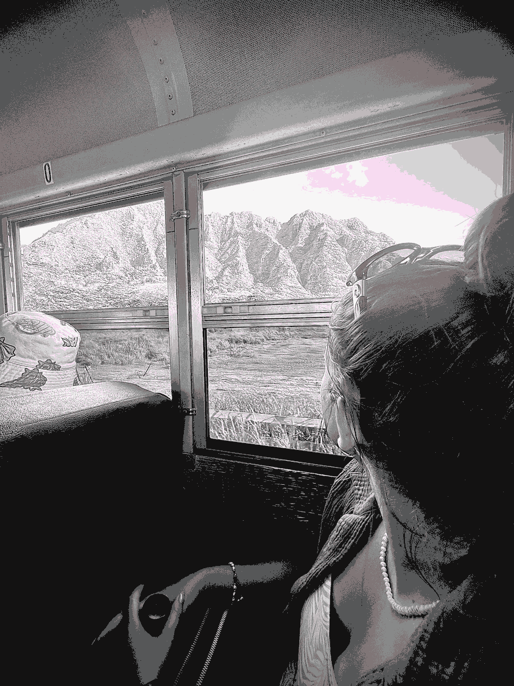

Texture and grit, when relating to glitch art, are strong elements that enhance the feel of the digital space collapsing. This could be due to the distortion or erosion of memory. As a space becomes glitched and distorted, the forms of texture appear. Many times it appears as graindata-streaking, which appears as grainy, RGB color separation , which portrays a melting textured feel, or as static shimmery surfaces.
These art pieces portray the exploration into the textured world of glitch art. By using timeline animation, distortion, and color, the glitch effect was created in these pieces. Throughout, the grainy noise texture is present, as well as the shiny glow caused by overlapping compressed and over-filtered images. By causing readability to be difficult, unease and tension build; thus, exploring what appears wrong actually becomes expressive.
